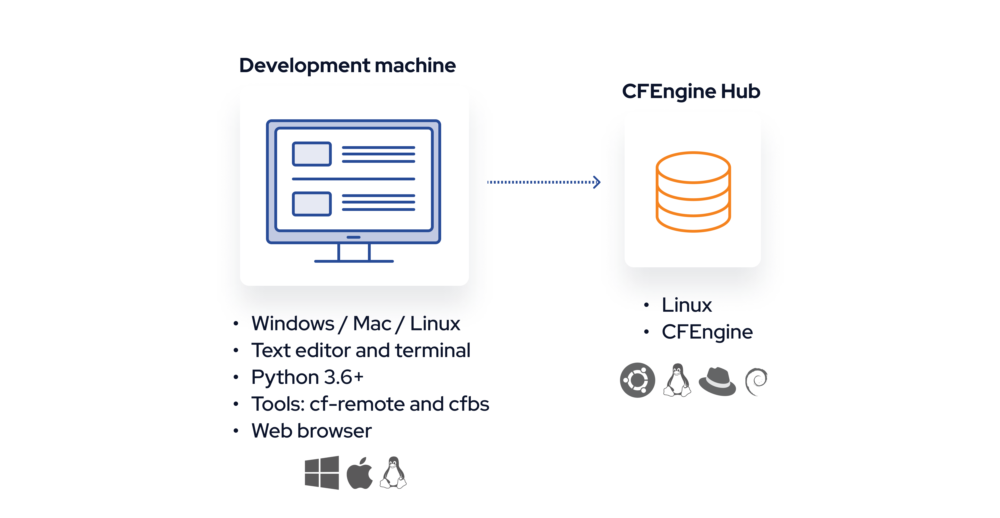
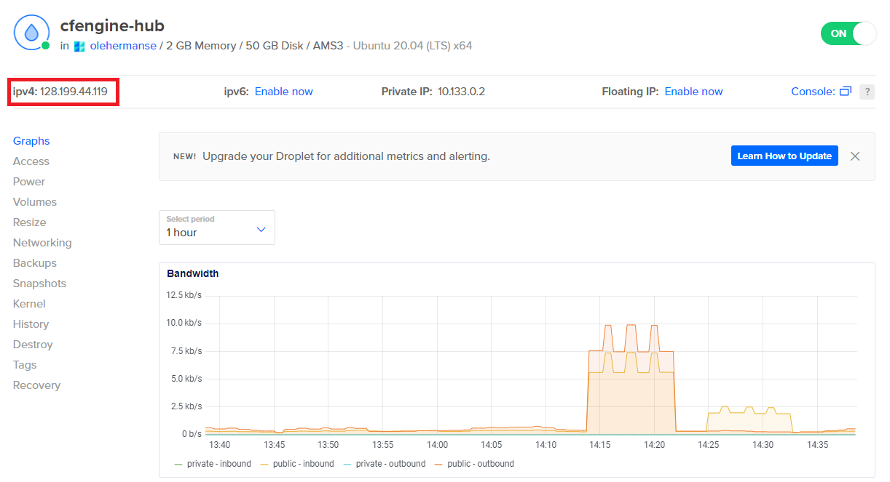

Installation
In CFEngine you mainly interact with the CFEngine Hub, for example using the Mission Portal Web UI, APIs, ssh, or git. All other hosts in your infrastructure will communicate with the hub, to fetch policy, modules and data, and to send back reporting data. For you, this means that the experience of working with just 1 host, or 1000 hosts, is largely the same. So, the only thing you need to get started is to set up 1 CFEngine Hub.

Video
There is a video version of this tutorial available on YouTube:
Linux virtual machine
CFEngine runs on a wide variety of platforms, including Windows, Mac, Linux, and BSD. For this tutorial, to make things simple, we are going to recommend one way to install and work with CFEngine. We will use an Ubuntu 20.04 Linux virtual machine as the CFEngine Hub, and we will interact with it using SSH and some python tools which you can install on your desktop / laptop.
If you've never set up a virtual machine (VM) before, these are some easy ways:
- Cloud: Create a VM in Digital Ocean, AWS, or any other cloud vendor. (Recommended)
- Mac OS: Install and run Vagrant and Virtual Box.
- Linux: Install and run Vagrant and libvirt.
- Windows: Use Windows Subsystem for Linux (WSL).
We recommend using Digital Ocean because it is very easy to use the GUI, and spawn a virtual without installing something locally. However, since it requires you to create an account, some users might prefer to install virtualization software and run everything themself. This is also possible, for example using Vagrant and VirtualBox, and we will provide instructions for both.
Development machine and CFEngine Hub
With the Linux VM there are 2 machines we will be talking about:

The CFEngine hub is the aforementioned Ubuntu 20.04 VM. We will access this via SSH, and install CFEngine there.
Your development machine is the machine you have in front of you, it can be any platform (Linux, Mac, Windows, ...). This is where you will run a terminal, browser, text editor, and some python tools. Throughout this tutorial we will tell you various commands to run on the command line (terminal), like this:
$ echo hello
hello
The dollar sign is the command prompt, the rest of the line is the command, so in this example you should copy echo hello into your terminal. (The hello on the next line is the output of the program, you should not copy this).
Install python 3 on your development machine
On macOS:
Install brew from brew.sh. Use brew to install Python 3:
$ brew install python3
On Ubuntu:
$ sudo apt-get install python3 python3-pip
If you are using Windows and Ubuntu inside of WSL, the command is the same.
Not all systems use apt-get as the package manager - if you are not using Ubuntu, look up how to install python 3 and pip on your system.
Check that it was successful:
To continue, you will need to be able to use python3 and pip3:
$ python3 --version
Python 3.8.10
$ pip3 --version
pip 20.0.2 from /usr/lib/python3/dist-packages/pip (python 3.8)
The python version must be at least 3.6, and it's important that the pip output shows a matching python version (otherwise pip is using another installation of python).
Install CFEngine tools on your development machine
In this tutorial series, we will be using 2 command line tools: cf-remote and cfbs.
These are small python tools and don't make changes to your system, they are only for working with CFEngine projects, modules, and installing / deploying to remote machines.
Depending on your operating system and how you installed python, you may be able to install python tools without sudo.
This is common on macOS:
$ pip3 install cfbs cf-remote
However, on other systems, notably popular Linux distributions, it is common to require root privileges (or extra configuration) to install python packages:
$ sudo pip3 install cfbs cf-remote
There are many ways to install command line tools with pip, if you want to do it without sudo, and install it in your home directory, and edit the PATH variable, or if you want to use virtual environments, you can.
The commands above are suggestions which should work for most people.
Importantly, you need the command line tools working after you've installed them:
$ cfbs --version
cfbs 1.3.3
$ cf-remote --version
cf-remote version 0.3.13
Available CFEngine versions:
master, 3.19.0, 3.18.x, 3.18.1, 3.18.0, 3.15.x, 3.15.5, 3.15.4, 3.15.3, 3.15.2, 3.15.1, 3.15.0, 3.15.0b1
Virtual Machine IP and username
Decide on whether you want to use VMs in the cloud (Digital Ocean) or locally (Vagrant and Virtual Box) and follow the appropriate instructions below.
Using Digital Ocean / Cloud platforms:
Spawn an Ubuntu 20.04 Linux Virtual Machine using the web GUI.
Find the IP address of your virtual machine, and the username so you can log in with SSH.
For example, in Digital Ocean, the username is root, and the IP might be 128.199.44.119 (found in top left of droplet screen as "ipv4"):

Note: In the rest of this tutorial, replace the IP address we use in the examples, 192.168.56.2 with that IP.
Using Vagrant and Virtualbox:
Come back to this tutorial after you have completed the installation and setup of a VM as explained in this tutorial:
Connecting with SSH
On your development machine:
Test that ssh works:
$ ssh root@192.168.56.2 -C "echo hello"
hello
If you see hello printed, it worked! If not, these are some of the more common error scenarios:
- If it prints
Connection refused, it might be because you just started the machine, wait a bit and try again. - If it hangs for many seconds, it might mean that you typed the wrong IP address (
Ctrl + Cto interrupt). - If it prints
Connection timed out, you are most likely using the wrong IP address. - If it gives any other errors, such as
Permission denied (publickey)you may be using the wrong user / SSH key or IP address. Double check and try again.
After you see ssh working, save the host in cf-remote so you can copy-paste our later commands:
$ cf-remote save -H root@192.168.56.2 --role hub --name hub
Note: If you are not using the vagrant machine with that IP address, remember to replace it with the one you use.
The host is now in a cf-remote group called hub, so we don't have to type the username and IP, for example:
$ cf-remote info -H hub
root@192.168.56.2
OS : ubuntu (debian)
Architecture : x86_64
CFEngine : Not installed
Policy server : None
Binaries : dpkg, apt
Install CFEngine
From your development machine, use cf-remote to install CFEngine on the Linux VM:
$ cf-remote install --hub hub --bootstrap hub
CFEngine is now installed and running on your hub, including the Web UI, the reporting database, and the components responsible for making changes to your system, serving and fetching policy, etc.
Open the CFEngine Web UI
Open the CFEngine Web UI in a web browser by clicking this link, or typing the appropriate IP in the address bar:
You might get warnings about an insecure connection or invalid certificate.
At this point, your hub has a self signed certificate, which means there is no certificate authority that can verify which server you are talking to.
In the future you might want to set up a DNS entry for your hub and give it a proper certificate, but for now, you can click the options in your browser to Ignore / Continue.
(In Chrome, there might not be an "Accept and continue button", but you can type thisisunsafe to bypass the security warning).
After this, you should see the CFEngine Enterprise login screen. Log in with username admin, password admin, and you will be asked to change the password.

After changing the password to something more secure, you should be able to log in and see the dashboard.
Next steps
Now that you have a CFEngine Hub working and the tooling on your development machine, you can go to the next part and start adding modules: